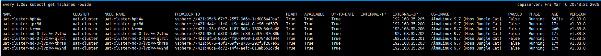
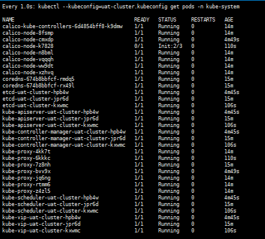

📝 Author
Birat Aryal — birataryal.github.io
Created Date: 2026-03-12
Updated Date: Thursday 12th March 2026 21:48:03
Website - birataryal.com.np
Repository - Birat Aryal
LinkedIn - Birat Aryal
DevSecOps Engineer | System Engineer | Cyber Security Analyst | Network Engineer
Cluster Yaml Generation
Use the environment variables created for the vcenter previously on vSphere Environment Variables
source /etc/capi-vsphere.env
Network ResourceSet creation for the Network inside the clusters.
- Download the calico manifest file
Bash
curl -fsSLo calico.yaml https://docs.tigera.io/calico/latest/manifests/calico.yaml - Enable CALICO_IPV4POOL_CIDR
sed -i 's#192\.168\.0\.0/16#10.244.0.0/16#g' calico.yaml
sed -i 's/# - name: CALICO_IPV4POOL_CIDR/- name: CALICO_IPV4POOL_CIDR/' calico.yaml
sed -i 's/# value: "10.244.0.0\/16"/ value: "10.244.0.0\/16"/' calico.yaml
Note
Here 10.244.0.0/16 is defined on the environment variables as well.
- Disable IP (best for VMWare Environments)
Bash
sed -i 's/"Always"/"Never"/' calico.yaml - Enable VXLAN overlay (recommended for vSphere networks)
Bash
sed -i '/CALICO_IPV4POOL_IPIP/a\ - name: CALICO_IPV4POOL_VXLAN\n value: "Always"' calico.yaml - Verify the result
Bash
grep -n CALICO_IPV4POOL calico.yaml - Recreate the ConfigMap
Bash
kubectl create configmap calico-manifest -n default --from-file=calico.yaml --dry-run=client -o yaml | kubectl apply --server-side -f - - Create the cluster resource set:
calico-crs.yamlYAMLapiVersion: addons.cluster.x-k8s.io/v1beta2 kind: ClusterResourceSet metadata: name: calico-crs namespace: default spec: strategy: Reconcile clusterSelector: matchLabels: cni: calico resources: - kind: ConfigMap name: calico-manifest - Apply the crs created above
Bash
kubectl apply -f calico-crs.yaml
Metrics Server Integration for Resources
- Download the Metrics server latest manifest file.
Bash
wget https://github.com/kubernetes-sigs/metrics-server/releases/latest/download/components.yaml -O metrics-server.yaml - Update the manifest file to add the insecure tls details
YAML
- --kubelet-insecure-tls - --kubelet-preferred-address-types=InternalIP,Hostname,InternalDNS,ExternalDNS,ExternalIP
Tip
{kind=link}
- Create the configmap for the metrics server
Bash
kubectl create configmap metrics-server-manifest -n default --from-file=/root/capicluster/addons/metrics-server/metrics-server.yaml --dry-run=client -o yaml | kubectl apply --server-side -f - - Create the
Cluster Resource Definationfor the deployment inmetrics-server-crs.yamlYAMLapiVersion: addons.cluster.x-k8s.io/v1beta2 kind: ClusterResourceSet metadata: name: metrics-server-crs namespace: default spec: strategy: Reconcile clusterSelector: matchLabels: metrics: enabled resources: - kind: ConfigMap name: metrics-server-manifest - Apply the
Cluster Resource SetBashkubectl apply -f metrics-server-crs.yaml
Cluster Generation
Generate the cluster from the command:
clusterctl generate cluster "${CLUSTER_NAME}" \
--kubernetes-version "${KUBERNETES_VERSION}" \
--control-plane-machine-count "${CONTROL_PLANE_MACHINE_COUNT}" \
--worker-machine-count "${WORKER_MACHINE_COUNT}" \
--infrastructure vsphere \
| yq '
# -------------------------
# Cluster labels for addons
# -------------------------
(select(.kind=="Cluster" and .metadata.name==strenv(CLUSTER_NAME)).metadata.labels.cni) = "calico" |
(select(.kind=="Cluster" and .metadata.name==strenv(CLUSTER_NAME)).metadata.labels.metrics) = "enabled" |
# -------------------------
# Kubernetes networking
# -------------------------
(select(.kind=="Cluster" and .metadata.name==strenv(CLUSTER_NAME)).spec.clusterNetwork.pods.cidrBlocks) =
[strenv(POD_CIDR)]
|
(select(.kind=="Cluster" and .metadata.name==strenv(CLUSTER_NAME)).spec.clusterNetwork.services.cidrBlocks) =
[strenv(SERVICE_CIDR)]
|
# -------------------------
# VIP endpoint
# -------------------------
(select(.kind=="VSphereCluster" and .metadata.name==strenv(CLUSTER_NAME))
.spec.controlPlaneEndpoint.host) =
strenv(CONTROL_PLANE_ENDPOINT_HOST)
|
(select(.kind=="KubeadmControlPlane" and .metadata.name==strenv(CLUSTER_NAME))
.spec.kubeadmConfigSpec.files[]
| select(.path=="/etc/kube-vip.hosts").content) =
("127.0.0.1 localhost kubernetes\n" +
strenv(CONTROL_PLANE_ENDPOINT_IP) + " " +
strenv(CONTROL_PLANE_ENDPOINT_HOST) + "\n")
|
# -------------------------
# Control plane network
# -------------------------
(select(.kind=="VSphereMachineTemplate"
and .metadata.name==strenv(CLUSTER_NAME))
.spec.template.spec.network.devices[0]) = {
"networkName": strenv(VSPHERE_NETWORK),
"dhcp4": false,
"gateway4": strenv(NODE_GATEWAY),
"nameservers": [
strenv(NODE_DNS_1),
strenv(NODE_DNS_2),
strenv(NODE_DNS_3)
],
"addressesFromPools": [{
"apiGroup": "ipam.cluster.x-k8s.io",
"kind": "InClusterIPPool",
"name": strenv(IP_POOL_NAME)
}]
}
|
# -------------------------
# Worker network
# -------------------------
(select(.kind=="VSphereMachineTemplate"
and .metadata.name==(strenv(CLUSTER_NAME) + "-worker"))
.spec.template.spec.network.devices[0]) = {
"networkName": strenv(VSPHERE_NETWORK),
"dhcp4": false,
"gateway4": strenv(NODE_GATEWAY),
"nameservers": [
strenv(NODE_DNS_1),
strenv(NODE_DNS_2),
strenv(NODE_DNS_3)
],
"addressesFromPools": [{
"apiGroup": "ipam.cluster.x-k8s.io",
"kind": "InClusterIPPool",
"name": strenv(IP_POOL_NAME)
}]
}
' > cluster.yaml
Apply the yaml generated
kubectl apply --dry-run=server -f cluster.yaml
kubectl apply -f cluster.yaml
kubectl get machines -owide
{kind=link}

Tip
This would take around 10 - 15 minutes for the cluster configurations.
Verifications
Download the kubeconfig file of the cluster that is created.
clusterctl get kubeconfig uat-cluster > uat-cluster.kubeconfig
Get the details of the pods running on the cluster
kubectl --kubeconfig=uat-cluster.kubeconfig get pods -n kube-system
{kind=link}

Could Verify the new VMs created on the vCenter as well:
{kind=link}
Cluster Health Verification
Verify cluster components after creation.
```bash
kubectl get nodes -o wide --kubeconfig=
Expected results:
-
All nodes
Ready -
Calico pods running
-
CoreDNS running
-
kube-vip running
-
vSphere CPI running
-
Metrics Server pods running